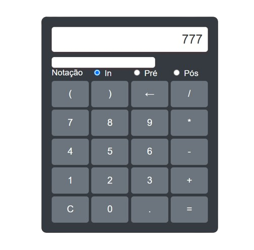
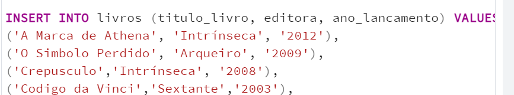

Bem-vindo ao Meu Portfólio
Aqui você encontra o Resumo Semestral sobre áreas de conhecimento referente ao 1º Semestre de Análise e Desenvolvimento de Sistemas da Faculdade Senai, como Automação Industrial, Desenvolvimento Web, Linguagem de Programação, Ciência de Dados e Bancos de Dados.
Sobre Mim
Estou em transição de carreira com aspirações em Análise e Desenvolvimento de Sistemas. Atualmente, sou estagiário na 2RP Net, alinhado aos meus objetivos profissionais e acadêmicos. Estou entusiasmado em aplicar e expandir meus conhecimentos em projetos tecnológicos inovadores.
Navegação
Acesse o conteúdo através dos ícones laterais
Resumo Semestral - Automação Industrial
Orientador: Profº Gabriel
A matéria de Automação Industrial, orientada pelo professor Gabriel, utiliza como linguagem principal o C++. Esta linguagem de baixo nível é geralmente empregada em sistemas embarcados e automação de máquinas. Durante as aulas, foram apresentadas diversas explicações, exemplos práticos de utilização e principais características da linguagem.
Após a introdução ao C++, foram realizados exemplos de aplicação em Arduino através do 'Tinkercad'. O professor explicou desde o 'void setup', que inclui declarações globais, até o 'void loop' para a execução contínua de comandos, incluindo condições, entradas (inputs) e saídas (outputs).
Tivemos a oportunidade de realizar diversos exercícios, como o controle de LEDs utilizando templates fornecidos pelo professor. Também foram simuladas ações de semáforos, múltiplos semáforos e contadores digitais. À medida que a compreensão dos conceitos avançava, foram introduzidos botões e sensores, permitindo a programação e padronização de execuções mais complexas.
Além disso, tivemos contato com a controladora 'ESP32', realizando exercícios para controle de LED, como configuração de relógio, contagem regressiva com condição de botão para redução do tempo e limpeza de dados.
- GITHUB Link Diretório.
Resumo Semestral - Desenvolvimento Web
Orientador: Profº Andre
A matéria de Desenvolvimento Web, orientada pelo professor André, tem como objetivo nos introduzir às primeiras aplicações FrontEnd. Desenvolvemos os conteúdos com o auxílio das linguagens HTML, CSS e JavaScript.
Inicialmente, fomos introduzidos aos conceitos básicos do HTML, desde nomenclaturas até padrões e boas práticas. Para facilitar nossa visualização na criação de sites, utilizamos o FIGMA para criar um modelo a ser seguido ao iniciar a criação no HTML. Antecipadamente, foram explicadas as divisões da página, como 'header', 'main', 'navbar' e 'footer'.
Meu primeiro site consistiu apenas na manipulação do HTML, introduzindo textos simples. Posteriormente, iniciamos alguns exercícios para aprimoramento e introdução de novas funcionalidades. Criamos uma página contendo uma Calculadora de IMC e, em seguida, desenvolvemos uma Calculadora Digital, semelhante à calculadora do Windows. Nesse momento, já havíamos sido introduzidos ao CSS, onde realizamos a estilização da página, incluindo tamanho de fonte, alinhamento de textos e itens, enquanto iniciávamos a introdução ao JavaScript. Além disso, realizamos outros exercícios, como a criação de um currículo com foto e principais competências.
Aprendemos também sobre o DOM em HTML, um conjunto de objetos e estrutura de dados, semelhante a uma árvore de objetos. Para praticar, desenvolvemos um site como modelo de Cadastro de Squads, incluindo funcionalidades, botões e caixas de alerta.
- GITHUB Link Diretório.
Resumo Semestral - Linguagem de Programação
Orientador: Profº Cainã
A matéria de Linguagem de Programação, orientada pelo professor Cainã Antunes, tem como objetivo introduzir a lógica de programação para iniciantes. Embora todas as disciplinas tenham sua parcela de importância na lógica, esta matéria destaca-se por ser a base para o desenvolvimento inicial.
Fundamentos da Programação:
Regras Sintáticas e Semânticas: Entendimento das regras que governam a estrutura e o significado do código.
Compiladores: Definição e função dos compiladores na programação.
Variáveis: Características e tipos de variáveis (char, int, bool, string) e seu uso correto.
Operadores: Introdução aos operadores aritméticos (+, -, *), condicionais (==, !=, <=) e lógicos (&&, ||, !).
Conversão de Variáveis e Input: Como converter tipos de dados e realizar entradas de usuário.
Exercícios Práticos:
Introdução a Linguaguem de Programação
- Variáveis, atribuições e operações matemáticas Exercícios introdutórios, como calcular o dobro de um número e converter velocidade de KM/h para M/s.
Estruturas de Decisão:
- If/Else: Executar blocos de código com base em condições específicas. Exemplo: verificar se um número é primo.
- Switch/Case: Permitir múltiplos caminhos de execução com comandos de parada 'break'.
Estruturas de Repetição:
- While, Do/While e For: Criação de loops que executam blocos de instruções enquanto uma condição for verdadeira.
Vetores e Matrizes:
- Vetores: Variáveis que alocam múltiplos valores do mesmo tipo em sequência.
- Matrizes: Vetores N-dimensionais.
Funções:
- Definição: Blocos de instruções executados quando chamados.
- Parâmetros e Retorno: Funções podem receber parâmetros e retornar valores.
- Recursividade: Funções que chamam a si mesmas dentro de seu bloco de instruções.
Programação Orientada a Objetos (POO):
- Conceitos Básicos: Programas modelados com um conjunto de objetos que interagem entre si.
- Método Construtor, toString() e Sobrecarga de Métodos: Introdução aos conceitos fundamentais da POO.
- GITHUB Link Diretório.
Resumo Semestral - Ciência de Dados
Prof. Cainã
A matéria de Ciência de Dados, orientada pelo professor Cainã, tem como objetivo apresentar informações sobre a análise de dados, utilizando a linguagem Python. Fomos introduzidos à plataforma online Google Colab.
Primeiramente, foram apresentados os princípios, fundamentos e características como população, amostras, variáveis qualitativas e quantitativas. Posteriormente, aprendemos sobre o conceito de amostragem e seus tipos (Aleatória Simples, Sistemática e Estratificada). No Colab, começamos importando as bibliotecas e utilizamos o dataframe 'Titanic'.
Amostragem Aleatória
Na amostragem aleatória, cada elemento tem a mesma possibilidade de ser escolhido.
Amostra Sistemática
Na amostragem sistemática, é feita primeiramente uma seleção aleatória do primeiro elemento da amostra e, posteriormente, os demais são selecionados através de intervalos fixos ou sistemáticos.

Amostra Estratificada
Na amostragem estratificada, os elementos são separados em grupos homogêneos e depois é realizada uma amostra aleatória em cada grupo.
Tendências Centrais
As tendências centrais são utilizadas para representar um conjunto de dados com um único valor. Elas são comuns para compreender melhor o comportamento do conjunto.
Moda
Basicamente, é o conjunto de dados com maior frequência ou repetição. A moda pode ser:
- Modal: Um único valor predominante.
- Bimodal: Dois valores predominantes.
- Polimodal: Mais de dois valores predominantes.
- Amodal: Nenhum valor predominante.
Mediana
Dado um conjunto, a mediana ocupa a posição central dos valores, basicamente é o valor ou dado que está no meio.
Média
Uma das medidas centrais mais utilizadas, tem vários tipos de média, mas uma das mais comuns é a média aritmética simples e ponderada.
Medidas de Dispersão
Percentil / Quartil
Medidas que dividem a amostra em partes iguais. Percentil divide a amostra em 100 partes, cada uma com uma porcentagem semelhante de dados. Quartil divide o conjunto em 4 partes iguais.

Amplitude
A medida de dispersão definida como a diferença entre a maior e a menor observação de um conjunto de dados.
Variância
Determinada pela média dos quadrados das diferenças entre cada uma das observações e a média aritmética da amostra.
Testes de Hipótese
O teste de hipóteses é um procedimento estatístico usado para tomar decisões ou fazer inferências sobre uma população com base em uma amostra. Ele envolve testar uma hipótese nula (H0) contra uma hipótese alternativa (HA). Existem vários testes de hipóteses utilizados conforme o tipo de dados e a questão de pesquisa, incluindo:
- Qui-quadrado
- Kolmogorov-Smirnov
- Shapiro-Wilk
- Anderson-Darling
Qui-Quadrado
Kolmogorov-Smirnov
Shapiro-Wilk
Anderson-Darling
- Colab Link Notebook.
Resumo Semestral - Banco de Dados
Orientador: Profº Cainã
A matéria de Banco de Dados, orientada pelo professor Cainã Antunes, tem como objetivo nos ensinar a importância dos dados e como é feito o armazenamento, manipulação e geração de relatórios através dos dados.
Primeiramente, fomos apresentados aos modelos, suas características e tipos de armazenamento.
Iniciamos nossos estudos no modelo de Banco de Dados Relacionais. Aprendemos sobre os diagramas de relacionamento e sua importância para a criação e implementação de um banco de dados.
Diagrama de Relacionamento
Depois, aprendemos sobre as plataformas de gerenciamento e passamos a utilizar o PostgreSQL. A partir dele, iniciamos aprendendo os comandos para implementação dos dados, desde criação e alteração de tabela (DDL); em seguida, aprendemos sobre os comandos de manipulação, onde introduzimos alguns dados. Para melhor exemplificação, o professor nos orientou a criar um banco de dados para um ecommerce, utilizando os comandos DDL, DML e DQL para realizar as consultas conforme passadas pelo professor.
Ecommerce
Também realizamos diversos exercícios para fixação dos métodos, desde a criação dos diagramas de relacionamento até os comandos DDL, DML e DQL.
Exercícios de Fixação
Por fim, realizamos o exercício de criação do Banco de Dados para uma Universidade, desde do Diagrama até os comandos DDL, DML e DQL.
Universidade
- GITHUB Link Diretório.